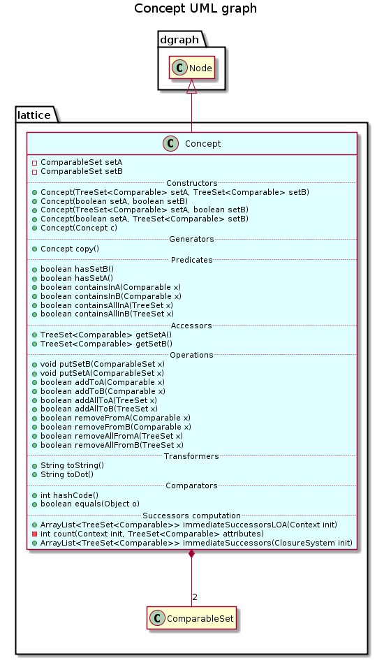

public class Concept extends Node
This class gives a representation for a concept, i.e. a node of a concept lattice.
A concept extends class Node by providing two comparable sets defined by ComparableSet, namely setA and setB, aiming at storing set of a concepts.
This component can also be used to store a closed set by using only set A.
This class implements class Comparable aiming at sorting concepts by providing the Node.compareTo(java.lang.Object) method. Comparison between this component and those in parameter is realised by comparing set A.

| Constructor and Description |
|---|
Concept(boolean setA,
boolean setB)
Constructs a new concept with an empty set of comparableset as setA and set B if the two boolean are true.
|
Concept(boolean setA,
java.util.TreeSet<java.lang.Comparable> setB)
Constructs a new concept containing the specified comparables set as setB, and an empty set of comparableset as setA if the boolean is true.
|
Concept(Concept c)
Constructs this component as a copy of the specified ClosedSet.
|
Concept(java.util.TreeSet<java.lang.Comparable> setA,
boolean setB)
Constructs a new concept containing the specified comparables set as setA, and an empty set of comparableset as setB if the boolean is true.
|
Concept(java.util.TreeSet<java.lang.Comparable> setA,
java.util.TreeSet<java.lang.Comparable> setB)
Constructs a new concept containing the specified comparables set as setA and setB.
|
| Modifier and Type | Method and Description |
|---|---|
boolean |
addAllToA(java.util.TreeSet x)
Adds the specified set of comparable to the set A.
|
boolean |
addAllToB(java.util.TreeSet x)
Adds the specified set of comparable to the set B.
|
boolean |
addToA(java.lang.Comparable x)
Adds a comparable to the set A.
|
boolean |
addToB(java.lang.Comparable x)
Adds a comparable to the set B.
|
boolean |
containsAllInA(java.util.TreeSet x)
Checks if the set A contains the specified set of comparable.
|
boolean |
containsAllInB(java.util.TreeSet x)
Checks if the set B contains the specified set of comparable.
|
boolean |
containsInA(java.lang.Comparable x)
Checks if the set A contains the specified comparable.
|
boolean |
containsInB(java.lang.Comparable x)
Checks if the set B contains the specified comparable.
|
Concept |
copy()
Returns a copy of this component.
|
boolean |
equals(java.lang.Object o)
Compares this component with the specified one.
|
java.util.TreeSet<java.lang.Comparable> |
getSetA()
Returns the set A of this component.
|
java.util.TreeSet<java.lang.Comparable> |
getSetB()
Returns the set B of comparable of this component.
|
int |
hashCode()
Returns the hash code of this component.
|
boolean |
hasSetA()
Checks if the concept has an empty set A.
|
boolean |
hasSetB()
Checks if the concept has an empty set B.
|
java.util.ArrayList<java.util.TreeSet<java.lang.Comparable>> |
immediateSuccessors(ClosureSystem init)
Returns the list of immediate successors of a given node of the lattice.
|
java.util.ArrayList<java.util.TreeSet<java.lang.Comparable>> |
immediateSuccessorsLOA(Context init)
Computes the immediate successors of this component with the LOA algorithm.
|
void |
putSetA(ComparableSet x)
Replaces the set A of this component by the specified one.
|
void |
putSetB(ComparableSet x)
Replaces the set A of this component by the specified one.
|
boolean |
removeAllFromA(java.util.TreeSet x)
Remove a set of comparable from the set A.
|
boolean |
removeAllFromB(java.util.TreeSet x)
Remove a set of comparable from the set B.
|
boolean |
removeFromA(java.lang.Comparable x)
Remove a comparable from the set A.
|
boolean |
removeFromB(java.lang.Comparable x)
Remove a comparable from the set B.
|
java.lang.String |
toDot()
Returns the dot description of this component in a String.
|
java.lang.String |
toString()
Returns the description of this component in a String without spaces.
|
compareTo, getContent, getIdentifierpublic Concept(java.util.TreeSet<java.lang.Comparable> setA,
java.util.TreeSet<java.lang.Comparable> setB)
Constructs a new concept containing the specified comparables set as setA and setB.
setA - set of comparable used to initialise setA.setB - set of comparable used to initialise setB.public Concept(boolean setA,
boolean setB)
Constructs a new concept with an empty set of comparableset as setA and set B if the two boolean are true. False booleans allow to construct a concept with only one of the two sets.
setA - field setA is empty if true, setA is null if false.setB - field setB is empty if true, setB is null if false.public Concept(java.util.TreeSet<java.lang.Comparable> setA,
boolean setB)
Constructs a new concept containing the specified comparables set as setA, and an empty set of comparableset as setB if the boolean is true. A false boolean allows to construct a concept with the only set A.
setA - set of comparable used to initialise setA.setB - field setB is empty if true, setB is null if false.public Concept(boolean setA,
java.util.TreeSet<java.lang.Comparable> setB)
Constructs a new concept containing the specified comparables set as setB, and an empty set of comparableset as setA if the boolean is true. A false boolean allows to construct concept with the only set B.
setA - field setA is empty if true, setA is null if false.setB - set of comparable used to initialise setB.public Concept(Concept c)
Constructs this component as a copy of the specified ClosedSet.
c - the closed set to be copiedpublic Concept copy()
Returns a copy of this component.
public boolean hasSetB()
Checks if the concept has an empty set B.
public boolean hasSetA()
Checks if the concept has an empty set A.
public java.util.TreeSet<java.lang.Comparable> getSetA()
Returns the set A of this component.
public java.util.TreeSet<java.lang.Comparable> getSetB()
Returns the set B of comparable of this component.
public boolean containsInA(java.lang.Comparable x)
Checks if the set A contains the specified comparable.
x - comparable to find in setA.public boolean containsInB(java.lang.Comparable x)
Checks if the set B contains the specified comparable.
x - comparable to find in setB.public boolean containsAllInA(java.util.TreeSet x)
Checks if the set A contains the specified set of comparable.
x - set of comparable to find in setA.public boolean containsAllInB(java.util.TreeSet x)
Checks if the set B contains the specified set of comparable.
x - set of comparable to find in setB.public void putSetB(ComparableSet x)
Replaces the set A of this component by the specified one.
x - set of comparable used to replace setBpublic void putSetA(ComparableSet x)
Replaces the set A of this component by the specified one.
x - set of comparable used to replace setApublic boolean addToA(java.lang.Comparable x)
Adds a comparable to the set A.
x - comparable to add to setApublic boolean addToB(java.lang.Comparable x)
Adds a comparable to the set B.
x - comparable to add to setBpublic boolean addAllToA(java.util.TreeSet x)
Adds the specified set of comparable to the set A.
x - set of comparable to add to setApublic boolean addAllToB(java.util.TreeSet x)
Adds the specified set of comparable to the set B.
x - set of comparable to add to setBpublic boolean removeFromA(java.lang.Comparable x)
Remove a comparable from the set A.
x - comparable to remove from setApublic boolean removeFromB(java.lang.Comparable x)
Remove a comparable from the set B.
x - comparable to remove from setBpublic boolean removeAllFromA(java.util.TreeSet x)
Remove a set of comparable from the set A.
x - set to remove from setApublic boolean removeAllFromB(java.util.TreeSet x)
Remove a set of comparable from the set B.
x - set to remove from setBpublic java.lang.String toString()
Returns the description of this component in a String without spaces.
public java.lang.String toDot()
Returns the dot description of this component in a String.
public int hashCode()
Returns the hash code of this component.
public boolean equals(java.lang.Object o)
Compares this component with the specified one.
public java.util.ArrayList<java.util.TreeSet<java.lang.Comparable>> immediateSuccessorsLOA(Context init)
Computes the immediate successors of this component with the LOA algorithm.
init - context from which successor of this component are computed.public java.util.ArrayList<java.util.TreeSet<java.lang.Comparable>> immediateSuccessors(ClosureSystem init)
Returns the list of immediate successors of a given node of the lattice.
This treatment is an adaptation of Bordat’s theorem stating that there is a bijection between minimal strongly connected component of the precedence subgraph issued from the specified node, and its immediate successors.
This treatment is performed in O(Cl|S|^3log g) where S is the initial set of elements, Cl is the closure computation complexity and g is the number of minimal generators of the lattice.
This treatment is recursively invoked by method recursiveDiagramlattice. In this case, the dependance graph is initialized by method recursiveDiagramMethod, and updated by this method, with addition some news edges and/or new valuations on existing edges. When this treatment is not invoked by method recursiveDiagramLattice, then the dependance graph is initialized, but it may be not complete. It is the case for example for on-line generation of the concept lattice.
cguerin - 2013-04-12 - transfer immedateSuccessors method from ConceptLattice to Concept
init - closure system used to compute immediate successors of this component.